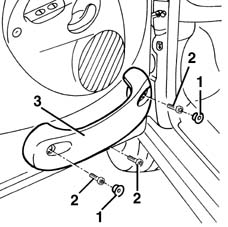

7005E30 object pouch on one front side door r r
- Path
- Procedures > 70 FITTINGS > 7005 PASSENGER COMPARTMENT FRONT SIDE DOORS > 7005E front side door trim > 7005E30 object pouch on one front side door r r
- Kind
- repair procedure (removal / refitting; the operation number is the code)
- Applies to
- all engines; all production periods
- Interactive page
- https://sloeber94.github.io/elrnDB-fMltpl/en/#/2892043
Applies to: all engines; all production periods
 Removing
Removing
 Refitting
Refitting1. Rotate the retaining buttons to the end of their travel using a screwdriver, then remove them.
2. Undo the screws.
3. Remove the oddment pouch.

Applies to: all engines; all production periods
Refitting
RemovingCheck that the pouch is undamaged.
Fit the oddment pouch.
Tighten the screws.
Fit the retaining buttons, then rotate them in their seatings to the end of their travel with a screwdriver.
Topics that link to this page (6)
- 7005D18 front side door descending window glass channel r r
- 7005D22 front side door descending window glass guide (one) - r r with door panel (and support frame) removed
- 7005M20 front side door electric window system - r r with door panel/support frame removed
- 7005M21 front side door electrically operated window - r r
- 7005M24 mechanism of front side door electric window system - check position and fastening with door panel removed
- 7005M25 front side door electrically operated window mechanism chech position and fastening